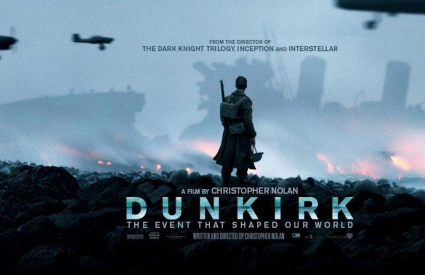

«Дюнкерк»
- Жанр: драма, трилер, історичний, воєнний
- Режисер: Крістофер Нолан
- У головних ролях: Том Гарді, Марк Райленс, Фінн Вайтгед, Гаррі Стайлс
- Країна: США, Велика Британія, Франція, Нідерланди
- Дата виходу: 20 липня 2017
«Дюнкерк» — воєнний драматичний трилер режисера та сценариста Крістофера Нолана, що вийшов у 2017 році. Фільм розповідає історію порятунку трьохсот тисяч солдатів у ході Дюнкерської евакуації, яка відбулась під час Другої світової війни.

Травень 1940 року ледь не став чорним для армії союзників – 300 тисяч солдатів опинилися у пастці у прибережному французькому місті Дюнкерк. Саме про це розповідає заснована на реальних подіях воєнна драма, постановкою якої займався Крістофер Нолан.
Після того як союзницькі війська опинилися затиснутими між морем і чисельнішою ворожою армією, положення стало критичним. Битва за Дюнкерк на березі Ла-Маншу обернулася драматичною і воістину героїчною операцією порятунку оточених німцями солдат бельгійських, британських і французьких військ. Згодом вона отримала назву «Дюнкерське диво».
1 2 3 4 5